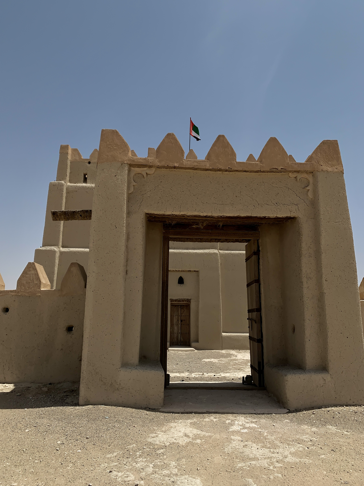
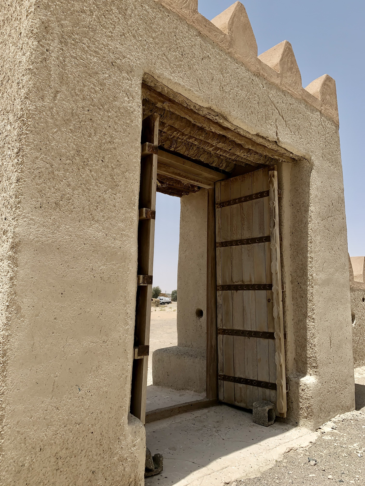
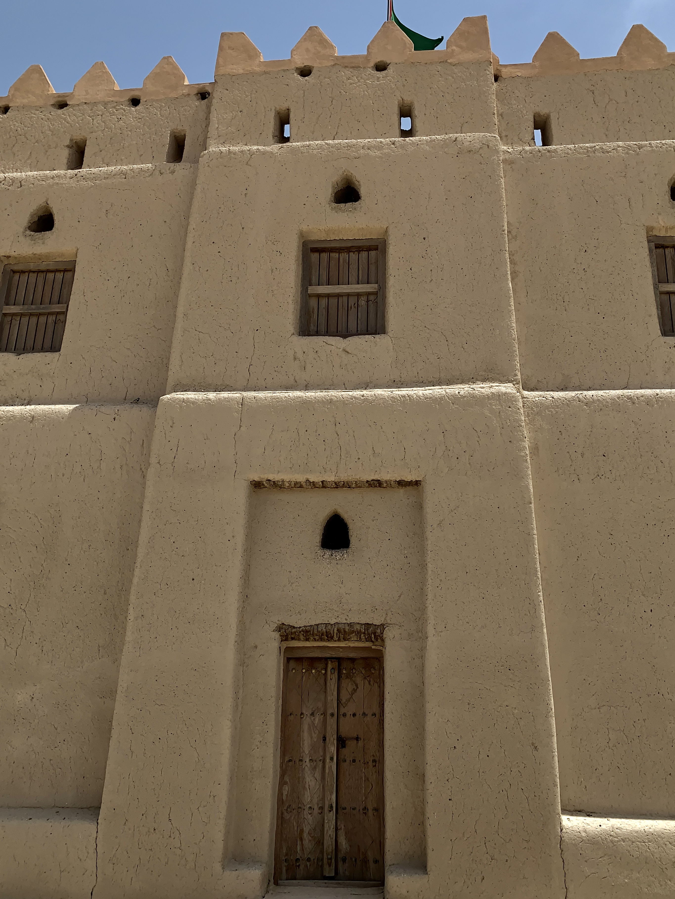
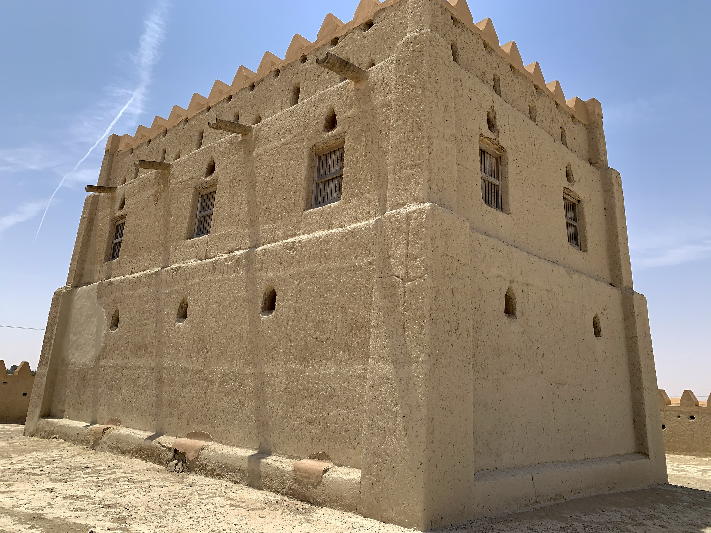

قلعة مستطيلة ذات طابقين، كل طابق به غرفتان، يحيط بها سورٌ قصيرٌ مثمَّنٌ. مدخلها متجه نحو الجنوب الغربي، وهو إلى الجنوب أقرب. تقع القلعة قرب منطقة رماح، على طريق الشاحنات الرابط بين أبي ظبي والعين، أنشأها الشيخ سعيد بن طحنون عام 1848، قرب مورد ماء اسمه العانكة، ويُلفظ (العانجة)، بعد أن انتصر في معركة العانكة التي وقعت هناك. الحصن الحالي مُعاد بناؤه في الثمانينات على أنقاض القلعة الأصلية.
   القلعة واقعة على طريق الروضة، والطريق الفرعي المؤدي إليها رمليٌّ غير معبد.